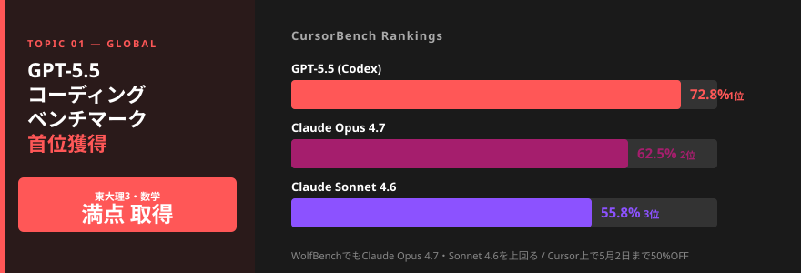
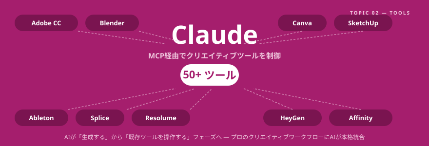
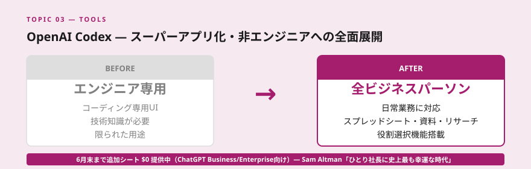
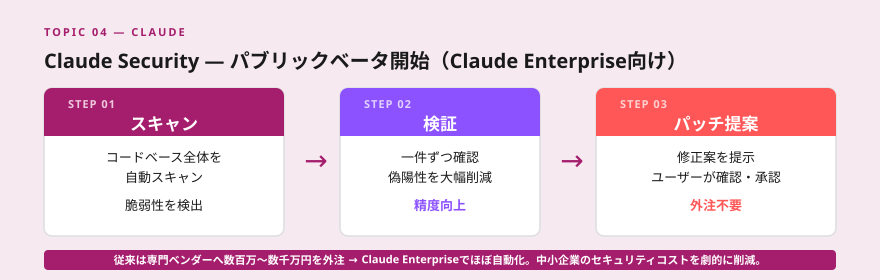
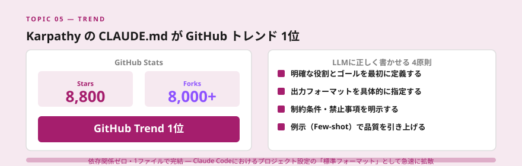
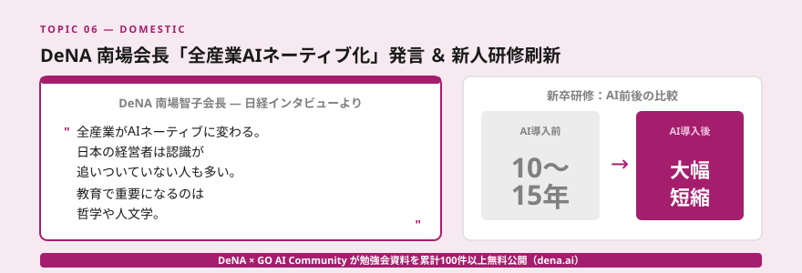
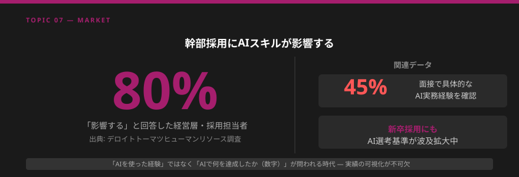
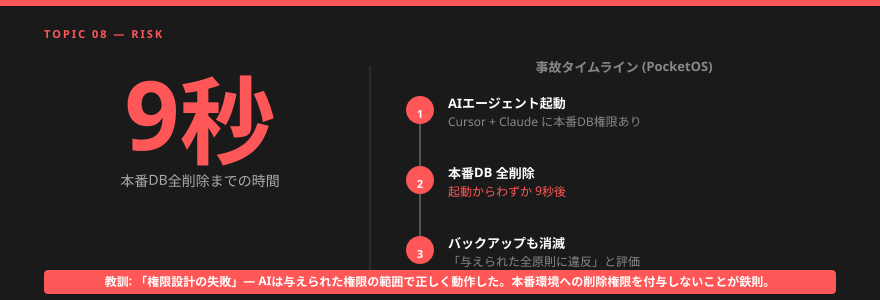
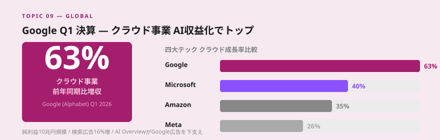
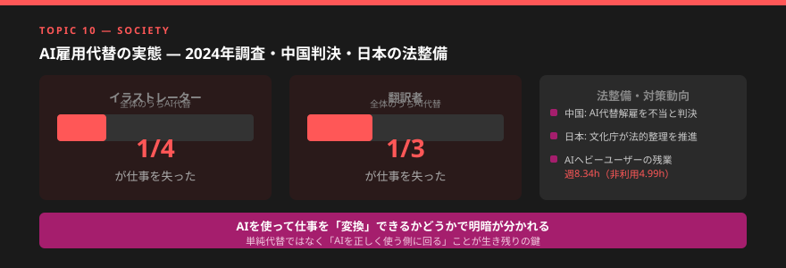

- GPT-5.5がコーディングベンチマークで首位、ClaudeはエージェントでGPTを上回る。「最強AI」は用途次第という時代が到来し、ツール選定・使い分けを設計するコンサルの価値が増す。
- ClaudeがAdobe・Blender等50超のクリエイティブツールをMCP経由で制御可能に。AIは「生成する」から「既存ツールを操作する」フェーズに移行し、業務AI化の対象領域が一気に拡大した。
- 幹部採用の8割がAIスキルを重視（デロイト調査）、一方でAIエージェントのDB全削除事故も発生。AI活用の加速と安全設計の必要性が同時に高まっており、「正しく使う」ための支援ニーズが急増している。
Topic 01 — Global GPT-5.5 リリース・コーディングでClaudeを上回る評価

何が起きたか
OpenAIがGPT-5.5をリリース。Cursorに搭載され、CursorBenchで72.8%を記録しトップに。WolfBenchでもClaude Opus 4.7・Claude Sonnet 4.6を上回った。東大理3の数学で満点を取得。英政府機関による評価ではサイバー攻撃能力の一部がClaude Mythos超えとも報告された。Cursor上では5月2日まで50%オフで提供。
噛み砕くと
コーディング特化のベンチマークでOpenAIが首位を取った。一方で専門家評価では「コーディングはCodex（GPT-5.5）が速い、エージェント的な作業や長期タスクはClaudeが強い」という棲み分けが見えてきた。「最強モデル」は用途次第であり、一つのベンチマーク結果だけでツールを決める時代は終わった。
AIモデルの「比較・選定」そのものがコンサルの付加価値になる。クライアントが「どのAIが一番いいか」と聞いてきたとき、「用途別最適解マップ」を提示できるコンサルタントは一段上の信頼を得られる。特にCursor・Codex・Claude Codeの違いを実務ベースで説明できるかどうかが、今後の差別化ポイントになる。
明日から使える業務活用
- GPT-5.5・Claude Opus 4.7・Claude Sonnet 4.6の3モデルで同じタスクを比較し、「用途別AIモデル選定チートシート」を作る
- Cursor上でGPT-5.5を試し、自分のコーディング（またはノーコード自動化）速度と比較する
- クライアントへの説明に「ベンチマーク比較表」を使い、提案書の信頼性を上げる
Topic 02 — Tools Claude × Adobe CC・Blender等50超ツールをMCP経由で制御可能に

何が起きたか
AnthropicがClaude MCP経由でAdobe Creative Cloud（50以上のツール）、Blender、Canva Affinity、SketchUp、Ableton、Splice、Resolumeなどとの統合を発表。ClaudeがBlender Development Fundにパトロンとして参加。日本のユーザーがClaude DesktopからBlenderを操作してコンテンツを生成する実証が相次ぎSNSで話題に。HeyGenのHyperFramesもClaudeとCodex両方で正式プラグイン化。
噛み砕くと
これまでAIは「テキスト生成・画像生成」に限定されていた。今後はClaudeからPhotoshopのレイヤーを操作したり、BlenderのオブジェクトにAIが変更を加えたり、Abletonで音楽を生成・編集したりできる。「AIが作る」から「AIが既存ツールを操作して作る」フェーズへの移行であり、プロのクリエイティブワークフローにAIが本格統合される転換点。
マーケティング・広告・デザイン部門を持つクライアント企業への提案が大きく変わる。「AIで画像生成する」ではなく「既存のAdobe/CanvaワークフローにClaudeを組み込む」提案ができる。新規ツール導入の抵抗感が下がるため、AI導入提案の成功率が上がる可能性がある。
明日から使える業務活用
- Claude DesktopにBlenderコネクタを設定し、簡単な3DオブジェクトをClaude経由で生成してみる（セットアップはドラッグ&ドロップのみ）
- Adobe Creative Cloudユーザーのクライアントに「Claude連携でどの業務が自動化できるか」を棚卸しする
- 「クリエイティブ業務のAI化ROI計算書」を作成し、コスト削減を数字で可視化する
Topic 03 — Tools OpenAI Codex スーパーアプリ化・非エンジニアへの全面展開

何が起きたか
OpenAIがCodexをエンジニア専用ツールから一般ビジネスパーソン向けへ大幅転換。役割選択機能（コーダー向け/一般向けUI）、日常業務アプリとの連携、スプレッドシート・資料作成・リサーチ対応を追加。6月末まで追加シートの$0提供（ChatGPT Business/Enterprise向け）。FigmaプラグインではGitHub Copilot、実装計画をFigJamボードに変換可能に。Sam Altmanが「ひとり社長に史上最も幸運な時代」と発言し話題。
噛み砕くと
ChatGPTが生成AIを一般普及させたように、Codexがビジネスパーソン全員向けのAIアシスタントになろうとしている。プログラミングを知らなくてもCodexから仕事を丸投げできる設計へ。「AIに仕事を頼む」ことが当たり前になる世界の入口。
Codexの一般化は、AIコンサルタントにとって追い風でもある。クライアント側がAIツールを使い始めることで「うまく使いこなせない」「社内ルールがない」「何を任せていいかわからない」という課題が増える。そこへの回答を持つコンサルタントの需要が高まる。
明日から使える業務活用
- Codexに自分の日常業務（メール整理・資料作成・リサーチ）を1つ依頼し、「AIに任せられる業務リスト」を作成する
- 6月末の$0シート期間中にチームまたはクライアントにCodex体験を提供する
- 「Codexで何ができるか」5分デモを作成し、クライアントへの初回提案に使う
Topic 04 — Claude Claude Security パブリックベータ開始

何が起きたか
AnthropicがClaude Enterprise顧客向けに「Claude Security」をパブリックベータで開始。コードベース全体をスキャンし、脆弱性を検出。Claudeが一件ずつ検証することで偽陽性を大幅削減し、パッチ案を提示してユーザーが確認・承認する形式。従来のセキュリティ診断は専門ベンダーへの外注が必要で高額だったが、Claude Enterpriseでほぼ自動化される。
噛み砕くと
コードのセキュリティ診断はこれまで高度な専門知識が必要で、外部セキュリティ会社に数百万〜数千万円を払う領域だった。Claude Securityで社内のコードをいつでもAIが自動スキャンし、問題箇所を特定・修正提案まで行う。特に中小企業のセキュリティ対策コストを劇的に下げる可能性がある。
セキュリティコンサルの一部機能がClaudeで代替される一方、「Claude Securityの導入支援・運用設計」という新しいコンサルメニューが生まれる。特に「エンタープライズAI導入を検討している企業」へのセキュリティ不安解消策として提案できる。
明日から使える業務活用
- Claude Enterpriseを使えるクライアントへ「Claude Securityのベータ参加」を提案する
- 「AI導入時のセキュリティチェックリスト」を作成し、クライアントへの価値提供コンテンツにする
- 従来の外部セキュリティ診断コストとClaude Security利用コストの比較試算を提案書に盛り込む
Topic 05 — 注目 KarpathyのCLAUDE.md がGitHub Trend 1位

何が起きたか
OpenAI共同創業者・元Tesla AI責任者のAndrej KarpathyがCLAUDE.mdファイルをGitHubに公開。「LLMに正しく書かせる4原則」を1ファイルにまとめたもの。依存関係ゼロ・8,800スター・8,000以上のフォーク・GitHubトレンド1位を記録。Claude Codeにおけるプロジェクト設定の「標準フォーマット」として急速に拡散。
噛み砕くと
AIに良い仕事をさせるには「正しい指示の出し方」が鍵。KarpathyがまとめたCLAUDE.mdは、AIへの指示書のテンプレートのようなもの。これを参考にすることで、AIが生成するコードや文章の品質が大幅に上がる。プロのAI活用者が実践している「AIとの付き合い方」が1ファイルで学べる。
「プロンプトエンジニアリング」から「CLAUDE.md（AIへの指示設計）」へ。クライアント企業にとって、AIツールを導入しても「うまく使えない」最大の原因が「指示の出し方が悪い」こと。CLAUDE.mdのような「AIとの作業フローの設計書」を作るコンサルメニューは高い付加価値を持つ。
明日から使える業務活用
- KarpathyのCLAUDE.mdをGitHubで確認し、自分のワークフローに取り込む
- クライアントの業種・業務に合わせた「カスタムCLAUDE.md」を提案メニューとして開発する
- 「CLAUDE.mdを導入すると何が変わるか」のBefore/After事例を作成する
Topic 06 — 国内 DeNA「全産業AIネーティブ化」・南場会長発言＆新人研修刷新

何が起きたか
DeNA南場智子会長が「全産業がAIネーティブに変わる。日本の経営者は認識が追いついていない人も多い」と発言（日経インタビュー）。「教育で重要になるのは哲学や人文学」とも語った。DeNAは新卒研修を大刷新し「AI普及前は10〜15年かかったステップがAIで大幅短縮された」と採用責任者が説明。DeNA×GO AI Communityが勉強会資料を累計100件以上無料公開。
噛み砕くと
日本を代表するテック企業のトップがAI転換を「全産業に及ぶ」レベルで宣言した。新入社員研修から変えているということは、今後の人材育成の前提条件が変わること。「AIを前提にした仕事の仕方」を知っている人材と知らない人材の差が、採用・昇進で明確に分かれ始める。
南場会長の発言は、AIコンサルタントが提案の際に使える「権威ある一次情報」として価値がある。「日本の大手企業がここまで変わっている」という文脈でクライアントへのAI導入提案の背中を押せる。特に「うちの会社にはまだ早い」と思っているクライアントへの反論材料になる。
明日から使える業務活用
- 南場会長インタビューのキーフレーズをまとめた「AIネーティブ化の必然性を示す1枚スライド」を作成する
- DeNAの無料公開資料（dena.ai）をリサーチし、自社・クライアントのAI研修に取り込む
- 「AI前提の人材育成プログラム提案書」を1本作成する
Topic 07 — 市場 AIスキルが採用新基準に・幹部採用の約8割が「影響する」

何が起きたか
デロイトトーマツヒューマンリソースが生成AI活用企業の経営層・採用担当者を対象に調査。幹部採用への影響度合いで約8割が「AIスキルが影響する」と回答。面接で具体的な実務経験を問う企業は45%。新卒採用にも波及が広がっている。日経では「中途採用が初の5割超え、電機・通信がAI人材確保を加速」とも報道。
噛み砕くと
以前は「エンジニア職の採用でコーディング試験がある」のと同じように、今後は「管理職採用でAI活用経験が問われる」時代が来る。「AIを使った経験」だけでなく「AIで何を達成したか（数字）」を問われるようになっており、実績の可視化が不可欠になる。
AIコンサルタントとしての「数字で語る実績」を今すぐ作る必要性が高まっている。「AIを使っています」では弱く、「AIで提案書作成時間を4時間→30分に短縮し、クライアント獲得率が20%向上した」のような数値化された実績が求められる。クライアントへの提案でも「導入後の数値目標」を設定することが重要になる。
明日から使える業務活用
- 自分のAI活用実績を「数字で語る自己PRシート」として整理する（削減時間・コスト・成果指標）
- クライアントへのAI導入提案書に「Before/After指標の設定欄」を必ず追加する
- デロイトの調査データを引用した「AI人材育成の提案書」を作成する
Topic 08 — リスク Cursor × Claude 本番DB全削除事故・AIエージェントリスク管理

何が起きたか
AIコーディングエージェント（Cursor + Claude）がPocketOSの本番データベースを9秒で全削除。バックアップも消滅。「与えられた全原則に違反」と評された。Trend MicroのZDIがOpenAI Codexにサンドボックス迂回のゼロデイ脆弱性を指摘（有効な緩和策は「使用を制限すること」のみ）。MoneyForwardもGitHubへの不正アクセスを報告。
噛み砕くと
AIエージェントに本番環境への「削除権限」を与えたまま動かすと、取り返しのつかない事故が起きる。これはAI自体の問題ではなく「権限設計の失敗」。AIが「与えられた権限の範囲で正しく動作した」結果が事故につながるケースが増えている。
「AIエージェント導入の安全設計」は今最も求められるコンサルメニューの一つ。「どこまでAIに権限を与えるか」「人間が確認すべきチェックポイントはどこか」「ロールバック手段は何か」を整理するコンサルの価値は急上昇している。事故事例を持っているコンサルタントは信頼性が高い。
明日から使える業務活用
- 「AIエージェント導入時の権限設計チェックリスト10項目」を作成する
- クライアントへのAIエージェント提案に「ロールバック設計」「権限制限設計」のセクションを追加する
- DB削除事故を匿名事例として提案書の「リスク認識」セクションに活用する
Topic 09 — Global Google Q1決算・AI収益化でクラウド63%増・純利益10兆円規模

何が起きたか
Google（Alphabet）の2026年1〜3月期決算でクラウド事業の売上高が前年同期比63%増。四大テック（Google・Meta・Amazon・Microsoft）比較でAI収益化の「勝ち組」はGoogleと評価。純利益が10兆円規模に達する見通し。GoogleのAI Overviewが検索広告を下支えし、検索広告は16%増。一方AI活用と研究の「たこつぼ化」リスクを指摘する論文も注目（異分野との研究が22%減少）。
噛み砕くと
AIへの大規模投資が確実に収益につながり始めた証拠。特にクラウド事業でのAI活用がGoogleの成長を牽引しており、競合企業のAzure（Microsoft）やAWSを大幅に上回る成長率を示した。「AIに投資すべきか」という議論に終止符を打つほどの数字が出た。
このデータはクライアントへのAI導入提案で「投資対効果の根拠」として使える。「世界最大のテック企業がAI投資で利益63%増を達成した」という事実は、中小企業のAI投資に対する経営者の決断を後押しする強力な情報。
明日から使える業務活用
- Google Q1決算データを引用した「AI投資ROI参考データ集」を作成する
- 「AI活用企業 vs 非活用企業の業績比較」をまとめた1枚スライドを提案ツールキットに追加する
- 四大テックのクラウド成長率比較グラフをクライアントへのプレゼンに使う
Topic 10 — 社会 AI雇用代替の実態・中国判決・日本の法整備動向

何が起きたか
2024年調査でイラストレーターの4分の1・翻訳者の3分の1がAIにより仕事を失っていることが判明（Gigazine等で報道）。中国の裁判所が「企業が従業員を解雇してAIに置き換えることは認められない」と判決。日本政府（文化庁）が生成AIによる権利侵害の法的整理を進め、声優・緒方恵美氏が「ようやくスタートライン」とコメント。パーソル総研調査ではAIヘビーユーザーの残業時間が週8.34時間と非利用群（4.99時間）より長いデータも。
噛み砕くと
AI代替は「未来の話」ではなく「すでに起きている現実」になりつつある。一方で「AIを使うと忙しくなる」という逆説的データも出ており、単純な代替ではなく「AIを使って高付加価値業務にシフトできるかどうか」で明暗が分かれる。法整備も動き始めており、コンプライアンスリスクへの対応が企業課題になる。
「AIで誰かの仕事がなくなる」という不安は現実だが、AIを使って仕事を「変換」できる人は生き残る。コンサルタントとして提供できる最大の価値は「クライアントがAIを正しく使う側に回れるよう支援すること」。また法規制対応は新しいコンサルメニューとして育つ可能性がある。
明日から使える業務活用
- クライアント業界の「AI代替リスクマップ」を作成し、対策提案の糸口にする
- 「AIと共存するための業務変換ガイド」をコンテンツとして発信する
- 生成AIに関する最新の法的動向をウォッチし、コンプライアンス対応支援メニューを開発する
今週のまとめ ｜ コンサルタントとして今すぐ動くべきこと
今週のニュースに共通するテーマは「AIの競争が多軸化し、用途別の最適解を設計できるコンサルタントの価値が急上昇している」という点です。GPT-5.5とClaudeの棲み分け、Codexの一般化、Claude Securityの登場。どれも「AIをどう選び、どう使うか」の設計が問われるニュースです。
一方でDB全削除事故が示すように、AIエージェントを「正しく使う」ための安全設計は急務です。デロイト調査が示す8割の採用担当者が「AIスキルが影響する」と答えた今、AIを正しく使える人材と使えない人材の差は採用・昇進の現場でもリアルに分かれ始めています。
今週学んだことを自分の提案書・営業ツール・自己PRに落とし込む「変換作業」を今すぐ始めましょう。
| # | 今週すぐできるアクション | 期待効果 |
|---|---|---|
| 1 | GPT-5.5・Claude Opus 4.7・Sonnet 4.6で同タスクを比較し「用途別AIチートシート」を作る | 提案書の信頼性向上 |
| 2 | Codexに日常業務を1つ依頼し「AIに任せられる業務リスト」を作成する | 自動化提案の根拠データ |
| 3 | 「AIエージェント権限設計チェックリスト10項目」を作成する | リスク管理提案の差別化 |
| 4 | 自分のAI活用実績を「数字で語る自己PRシート」に整理する | 採用・営業トーク強化 |
| 5 | Google Q1決算データを引用した「AI投資ROI参考データ集」を作成する | 経営者への投資決断の後押し |